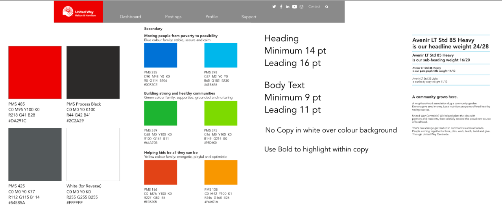
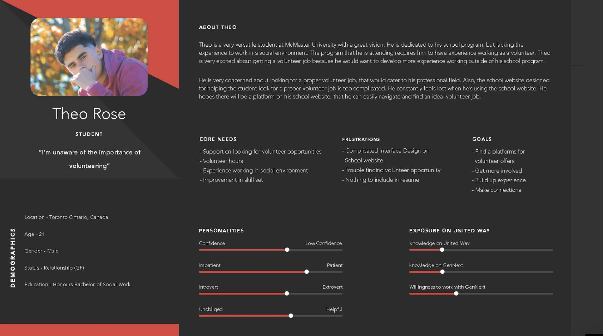
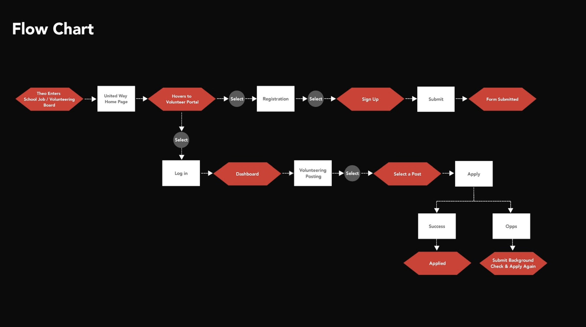
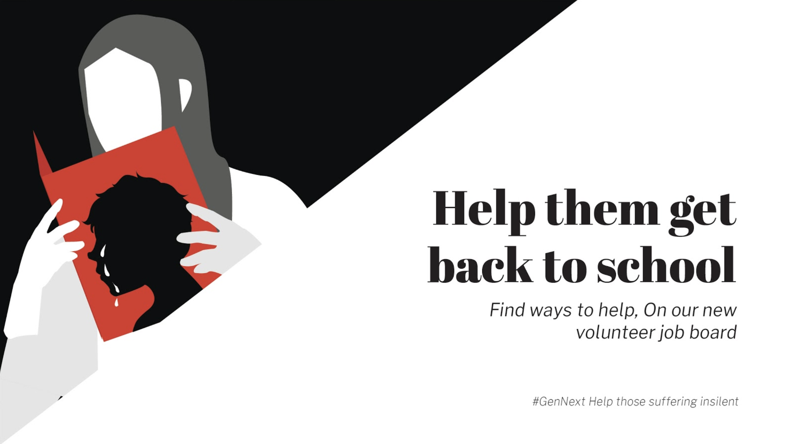
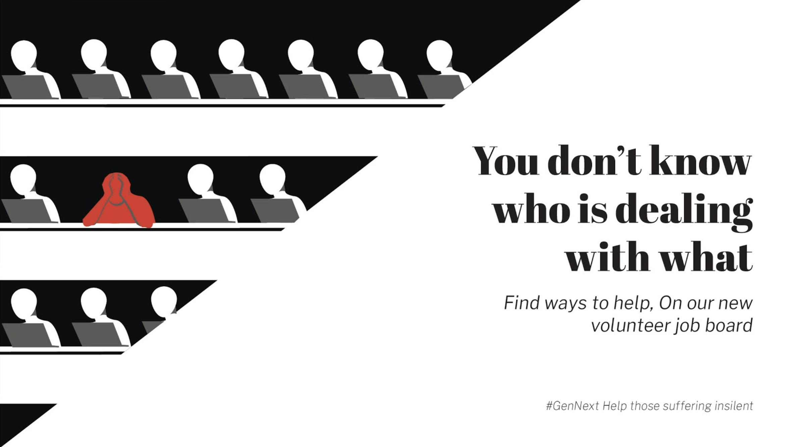
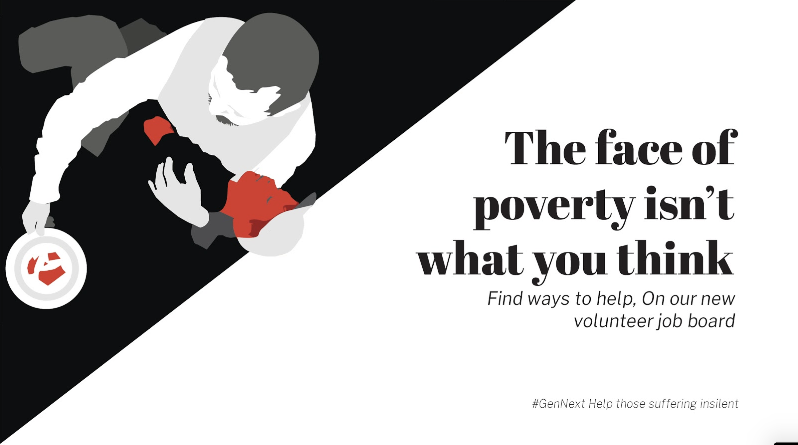
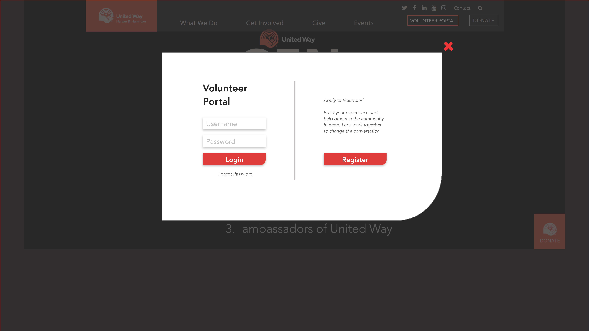
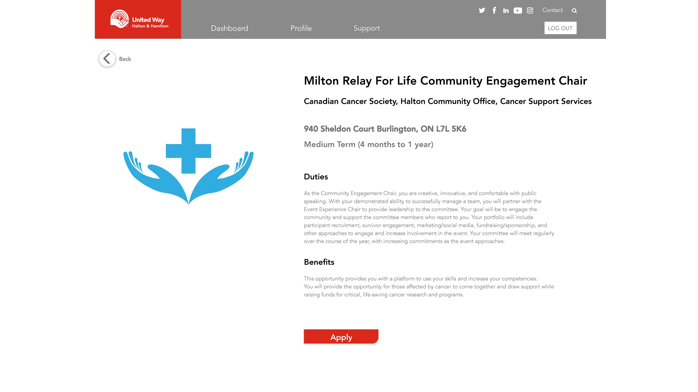
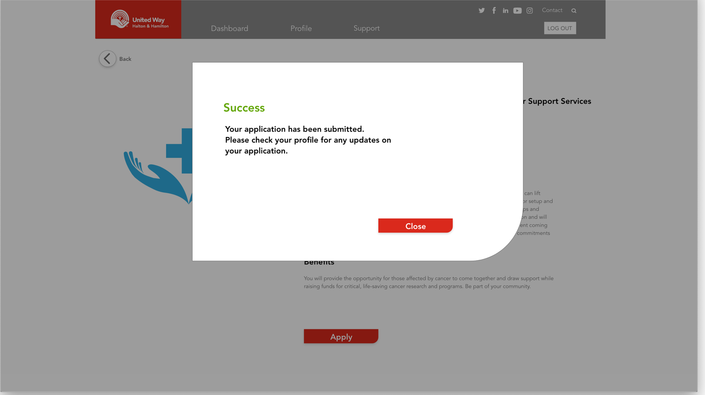
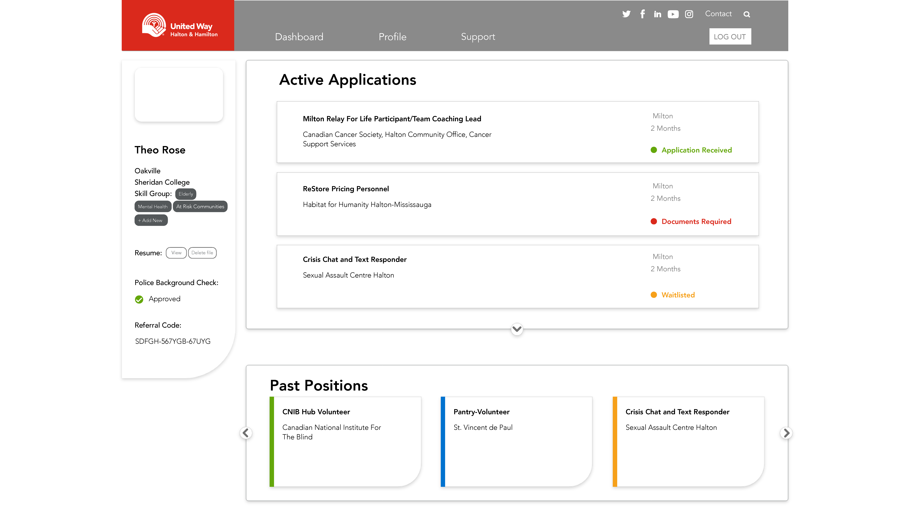

United Way
Claudia Zingone, Riselda Zani, Fei Huang, Alex Atiti, Tanvi Chhabra
About
My Team and I designed a volunteer portal catered to young adults for United Way. The portal would be an added extension to their existing website.
Challenge
How do we create new and innovative opportunities for our youth to roll up their sleeves, get involved in our communities and volunteer by contributing their resources and becoming part of initiatives such as the GenNext Program.
Goal
The goal of this project was to help people on a path to create a sustainable change. The project was meant to be a place to make it easier for students to find opportunities that will help them with completing their goals, as well as help United Way complete their goals. With this implemented we predict that more young adults will volunteer.
Style Tab

Taking insporation from the stle guide United Way already had, we incorperated that into our new design. The intention of this was to make the new portal look Cohesive with the remainder of the website.
Persona

The target audience for this portal is college/university student who need to complete mandatory community service hours.
Flowchart

Marketing Recommendations
We propose a focus on advertising the volunteer opportunities on College/University Job boards with a direct link to the portal. People can create a profile and easily apply to take part in volunteer opportunities in their community.



Interface





Conclusions
GenNext volunteering board listed along with post-secondary job boards
Creates a direct link to make it accessible
Updates proof of skills, networking opportunities, education, & character development
Re-advertising, updating the way united way presents their volunteer opportunities
Better chance at connecting to young adults
having greater involvement among that demographic
A portal on GenNext for young adults to browse, engage, and apply to volunteer opportunities that suits their
skill sets